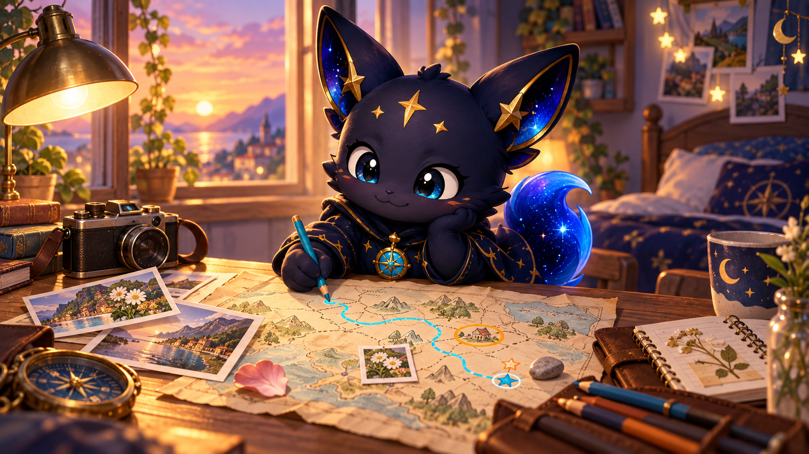
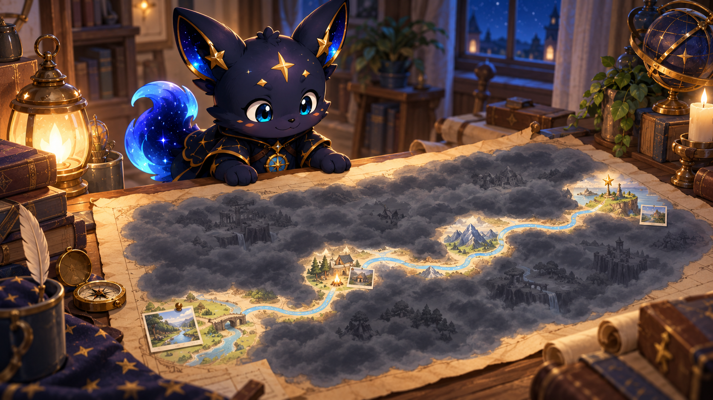

아직 사진이 없습니다.
저장된 발걸음이 없습니다.
아직 방문한 장소가 없습니다.
아직 획득한 아이템이 없습니다.
길로아의 ‘나의 대동여지도’에는 다음 기관과 서비스의 데이터가 사용됩니다.
지역 마스코트와 캐릭터의 명칭·이미지 저작권은 각 지자체에 있습니다. 그 밖의 데이터 저작권은 해당 제공기관과 원저작자에게 있으며, 사진 등 개별 콘텐츠에는 별도의 출처가 표시될 수 있습니다.
당신의 기록을 오래 지키고, 사진과 발걸음을 더 정확히 남길 수 있도록 다듬었습니다.
아직 만나지 못한 세상을 당신만의 대동여지도로 만들어 가는 이야기입니다.
지역을 방문해 GPS 기록을 쌓으면 황동색 틀에 그 지역의 뱃지가 채워져요.
가볍게 걸으며 오늘의 길을 남겨보세요.
촬영 위치를 직접 지정하거나 위치 없이 보관할 수 있어요.
지도에서 사진을 촬영한 위치를 눌러 주세요.
사용 중 불편한 점이나 건의사항은카카오톡 오픈채팅으로 들려주세요
현재 지역에서 일반적으로 형성된 가격을 참고용으로 보여줍니다.
공공데이터를 바탕으로 한 참고 가격입니다.
오늘의 발걸음이 나만의 지도가 되었어요.